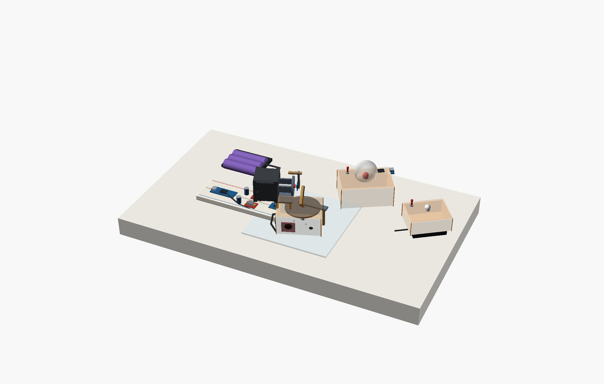
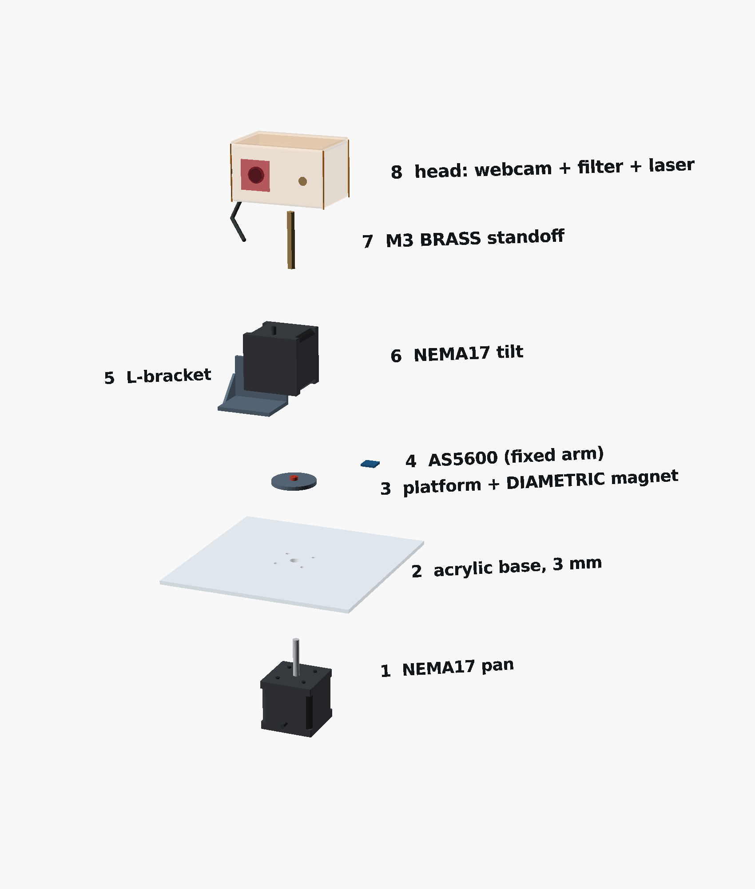
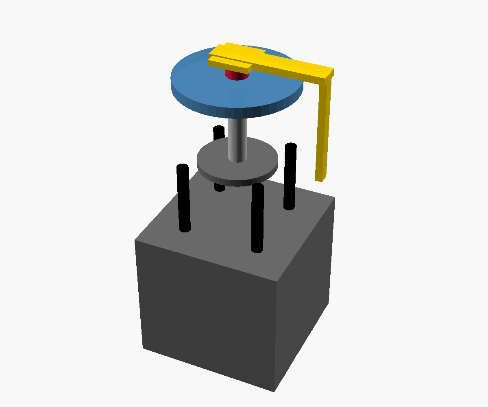
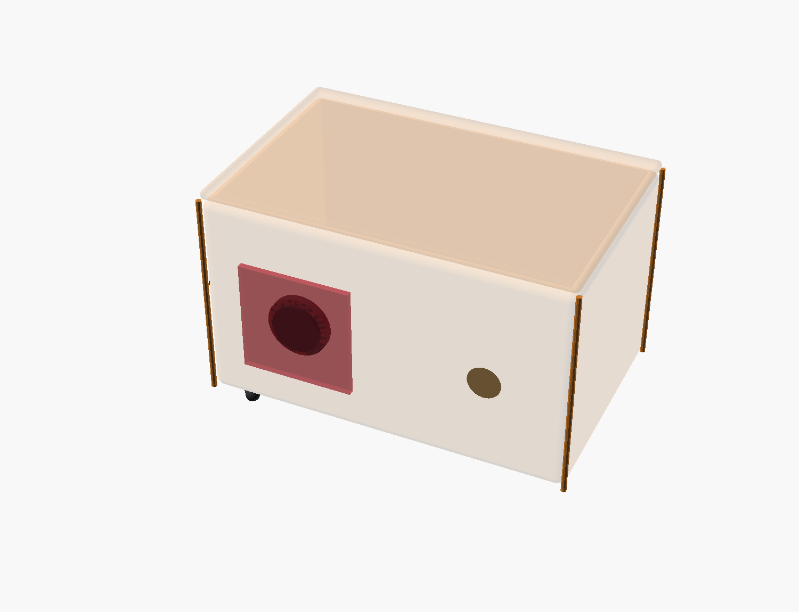

ZeroDrift MK2: the complete build
Every part, every wire, every command, from an empty table to the rig locking onto the beacon on the website. Follow the sections in order. Every step ends with a CHECK. Don't go on until the check passes.

01Parts
HAVE in hand ARRIVING ordered BUY get it at Amar Robotics (see the shopping list PDF)
The rig
| Part | Qty | Status | Check before you use it | |
|---|---|---|---|---|
| NEMA17 stepper, 1.8°/step | 2 | HAVE | 4 wires each | |
| A4988 driver module (+ heatsinks) | 2 | HAVE | Small resistors near the chip say R100, R050 or R200. Note it (for Vref, step 8.2). Stick the heatsink on the chip. | |
| NEMA17 L-bracket | 2 | HAVE | Only the tilt motor needs one; the second is a spare | |
| 100 µF 25 V capacitor | 2 | HAVE | Striped leg is − | |
| AS5600 magnetic encoder | 2 | HAVE | Solder the header pins if loose | |
| Diametric magnet 6 × 2.5 mm | 2 | HAVE | Must be diametric (test in step 4.4) | |
| TCA9548A I²C multiplexer | 1 | HAVE | Solder the header pins | |
| USB webcam (UVC) | 1 | ARRIVING | Plug into the laptop and open it on the Live page before you strip the housing | |
| KY-008 laser module | 1 | HAVE | Pins marked S, middle, − | |
| ABS project box ≈ 70 × 50 × 30 mm (camera head) | 1 | BUY | Webcam board and laser inside, two holes in the front | |
| Red filter: red transparent acrylic 2 mm, red cellophane or an old sunglasses lens | 1 | BUY | Hold it over a phone camera: the room goes dim, a red LED stays bright | |
| Arduino Nano (rig) | 1 | HAVE | Have the right USB cable (Mini-USB or USB-C) | |
| 12 V motor supply: 3×18650 pack in its holder or a 12 V 2 A adapter | 1 | HAVE / BUY | Section 5 (Power). Each 18650 must read 3.7–4.2 V. | |
| DC jack with screw terminals (if you use the 12 V adapter) | 1 | BUY | Matches the adapter plug (5.5 × 2.1 mm) | |
| SPST toggle switch (motor kill switch) | 1 | HAVE | ||
| 830-point breadboard + Dupont jumpers (M-M, M-F, F-F) | 1 | HAVE | ||
| White sheet (base plate, ≈ 150 × 150 mm) | 1 | HAVE | ||
| Clear acrylic 3 mm, A4 + acrylic cutter (hook blade) | 1 | BUY | Pan disc 60 mm, tilt disc 40 mm, 2 encoder arms 15 × 60 mm, head plate. Score 5–6 times along a ruler, then snap. | |
| M3 screws: × 16 (8) and × 10 (20), nuts, washers | 28 / 30 / 20 | BUY | × 16 for the pan motor through the base; × 10 for the tilt motor, couplings and L-bracket | |
| M3 × 40 screws + nuts | 4 + 12 | BUY | Posts for the two encoder arms | |
| M3 standoff 15 mm | 4 | BUY | Risers under the L-bracket | |
| M3 brass standoff 20 mm | 4 | BUY | Two screwed together = 40 mm head post. Brass, not plastic. | |
| M4 × 80 bolts + nuts | 4 + 12 | BUY | Base legs, so the pan motor hangs free | |
| 5 mm rigid flange coupling | 2 | BUY | Bore 5 mm, rigid metal, grub screw. Holds the pan disc and the tilt disc on the shafts with no play. | |
| USB-C hub | 1 | BUY only if needed | Only if the laptop has USB-C ports only: the Nano and the webcam must be plugged in together |
The beacon (section 9A)
| Part | Qty | Status | Check | |
|---|---|---|---|---|
| Arduino Nano (second one) + USB cable | 1 | HAVE | ||
| Red LED, bright, 10 mm (5 mm works) | 1 | HAVE | Long leg = + (anode) | |
| 220 Ω resistor (red-red-brown) | 1 | BUY | 150–330 Ω also works | |
| Ping-pong ball (half of it) | 1 | HAVE | Diffuser: makes the LED visible from the side | |
| Power: phone USB charger, USB power bank, or your 5 V 1 A adapter | 1 | HAVE | Section 9A.6 | |
| ABS project box ≈ 100 × 60 × 25 mm | 1 | BUY | LED goes through the lid |
The decoy (section 9B)
| Part | Qty | Status | Check | |
|---|---|---|---|---|
| 3×AA battery holder + 3 AA cells (alkaline) | 1 | HAVE + BUY cells | Fresh cells: ≈ 4.5–4.8 V together | |
| Red LED, same kind as the beacon | 1 | BUY | The decoy must look as bright as the beacon through the red filter. A white LED looks dim there. | |
| 100 Ω resistor (brown-black-brown) | 1 | BUY | 82–150 Ω also works; two 220 Ω side by side = 110 Ω | |
| Toggle switch | 1 | HAVE | ||
| Glue and tape: Fevikwik, hot glue sticks, foam tape, insulation tape, zip ties | 1 | BUY | Shopping list items 19–24 | |
| Other half of the ping-pong ball | 1 | HAVE | Same diffuser as the beacon: the only difference left is the blink | |
| ABS project box ≈ 100 × 60 × 25 mm | 1 | BUY |
02Tools and software
Tools
| Multimeter: Vref, battery voltage, finding motor coil pairs. You can't build this without one. | |
| Soldering iron + solder: header pins on the TCA9548A and AS5600s | |
| Small screwdriver (plastic/ceramic ideal) for the A4988 pot; Phillips for M3 | |
| Drill + 3 mm and 5–6 mm bits (a step bit if you have one); masking tape for acrylic | |
| Hacksaw / acrylic cutter, file or sandpaper | |
| Allen key for the flange-coupling grub screws | |
| Superglue (magnets), hot glue (camera, laser), double-sided foam tape, zip ties, insulation tape | |
| Wire stripper; ruler; marker; a printed protractor or phone level app | |
| Two old credit cards: stacked, they make a 1.5 mm gap gauge for the encoders |
Software
| Arduino IDE 2 (arduino.cc/en/software) | |
Library AccelStepper by Mike McCauley (Library Manager). Wire is built in. | |
Firmware from the repo: tools/rig/rig_firmware_v2.ino (rig) and tools/rig/beacon_firmware.ino (beacon) | |
| Chrome or Edge (the website talks to the Nano over Web Serial; Safari/Firefox can't) | |
| Clone Nano (CH340 chip) not showing a port: install the CH340 driver |
03Five safety rules (each one kills a part)
- Never plug or unplug a motor while the 12 V switch is on. The A4988 dies instantly and silently.
- Capacitor on every VMOT, 100 µF, right at the driver pins, correct way round (stripe to GND). Without it the first power-on spike can kill the driver.
- One common ground. Battery −, both drivers, the Nano and everything else share GND. Missing ground = motors buzz or do nothing.
- Laser: never look into it and never point it at people. Test on a wall.
- 12 V never goes to the Nano, the 5 V rail, VDD, the TCA or the AS5600s. 12 V only touches VMOT. Check the rails with the multimeter before plugging boards in.
04Mechanical build
The 3D step-by-step assembly shows every part below arriving in its place: click a stage, orbit, explode. Keep it open next to you.



- 4.1 Base plate (white sheet). Keep the protective film on, and put masking tape where you'll drill. Mark the centre. Hold the pan motor under the sheet, face up, and mark through its 4 screw holes (a 31 mm square). Drill the 4 holes at 3 mm and the centre at 6 mm. Drill slowly, no pressure, or acrylic cracks. The motor shaft passes through the centre hole without touching the edge.
- 4.2 Pan motor. Bolt the motor under the base, shaft pointing up, with 4 M3×16 screws. Put 2 nuts on each screw between the motor and the plate as spacers: the motor's round boss (22 mm, 2 mm tall) must not press on the sheet. Put an M4 × 80 bolt through each corner as a leg (a nut above and below the plate, and a nut at the bottom to level it), so the motor hangs free. Put the motor cable out to the side you'll wire from. The base sits flat and doesn't rock; the motor doesn't touch the table.
- 4.3 Pan platform + magnet. Cut a 60 mm disc from the clear acrylic (score around a drawn circle, or cut a hexagon and file the corners). Draw 2 lines through its centre (a cross). Bolt it on top of a 5 mm flange coupling, centred. Slide the coupling onto the pan shaft and leave a 2 mm gap to the base (the credit cards make a good spacer). Tighten the grub screw onto the flat of the shaft. Superglue a diametric magnet exactly on the centre of the cross. Turn the motor shaft by hand: the disc spins flat, with no wobble and no rubbing. The magnet stays on the centre and doesn't draw a circle. If the disc wobbles, re-seat the coupling; last resort is the lazy-Susan bearing.
- 4.4 Magnet test (2 minutes, saves hours). Hold the second magnet near the glued one. A diametric magnet has its N and S on the sides: rolling one around the other flips attract/repel as you go round the edge. An axial magnet has N/S on the flat faces; it will read a constant and the encoder is dead with no error. Both magnets are diametric.
- 4.5 Pan encoder arm (does NOT turn). Stand an M3 × 40 screw up through the base about 38 mm from the centre (nut underneath, nut on top). Cut a clear acrylic strip ≈ 15 × 60 mm, drill a 3 mm hole at one end, and fix it on top of the screw between two nuts so it reaches over the centre. Fix the pan AS5600 under the arm, chip face-down, chip exactly over the magnet. Set the height with the 2 credit cards between chip and magnet (1.5 mm; 0.5–3 mm works). Use washers/nuts on the post to adjust. Looking straight down, the chip is centred on the magnet within 0.5 mm, and the arm stays still when the platform turns.
- 4.6 Risers + L-bracket. Four 15 mm M3 standoffs on the platform, L-bracket on top of them. The risers lift the bracket over the encoder arm. Check this in the 3D view. Put the bracket slightly off-centre so the tilt shaft ends up near the pan axis. Turn the platform ±90° by hand: the bracket and risers pass over and around the encoder arm and post without touching.
- 4.7 Tilt motor. Bolt it to the L-bracket upright, shaft horizontal, at right angles to the way the head looks, so tilt nods up and down. The shaft is level (phone level app).
- 4.8 Tilt disc + magnet + encoder. A 40 mm acrylic disc on the second flange coupling, on the tilt shaft. Glue the second diametric magnet at the centre of the disc's outer face. Fix the tilt AS5600 on a second clear acrylic strip (with an M3 × 40 post if needed) bolted to the L-bracket (the side that does NOT turn with tilt). The chip faces the magnet, centred on the shaft line, 1.5 mm away. Nodding the disc by hand, the gap stays at 1.5 mm and nothing rubs.
- 4.9 Brass standoff + head. Screw two 20 mm brass M3 standoffs together (≈ 40 mm). Bolt this to the tilt disc near its edge and hang the head box (the 70 × 50 × 30 mm ABS box) from it. Never use a printed or plastic part here: it sags and shakes. Inside the box, take the webcam board out of its housing. Hot-glue it behind a hole in the front, with the red filter over the lens (filter over the camera only, not the laser). Hot-glue the KY-008 laser beside it, about 20 mm away, pointing the same way (parallel). With the motors unpowered, move the head: it swings freely. Tilt ±18° clears the platform. Camera and laser point the same way (laser dot near the middle of the camera view on a wall 2 m away).
- 4.10 Cables. Run the camera USB, laser wires, tilt-motor cable and tilt-encoder wires down the bracket together (zip ties). Leave a loose service loop at the tilt joint and at the pan joint so full travel never pulls a wire. Keep the loop off the base plate. Pan −90° → +90° and tilt −18° → +18° by hand: no cable goes tight or catches.
05Wiring: diagrams
Wire colours used below: red = 12 V, orange = 5 V, black = GND, blue = SDA, green = SCL, purple = signals. Do all wiring with the battery unplugged and the Nano USB unplugged.
5.0 Power: what connects to what
The rig has two separate power sources, joined by one ground wire:
| Source | Powers | How |
|---|---|---|
| Laptop USB (stays connected the whole time) | Nano, A4988 logic (VDD), TCA9548A, both AS5600s, laser, webcam | USB cable into the Nano; webcam USB into the laptop |
| 12 V source: 3×18650 pack in its holder or a 12 V 2 A adapter | Only the two motors, through the A4988 VMOT pins | Through the kill switch to the 12 V rail (wires 1–3) |
| One ground wire | Joins both sources | 12 V source − ↔ Nano GND (wires 4–5). Without it nothing moves. |
- Using the 18650 pack? Before putting the cells in the holder, set the multimeter to DC V and measure each cell. Each reads 3.7–4.2 V, and all three are within 0.1 V of each other. In the holder, the pack reads 11.1–12.6 V.
- Cells below 3.5 V, or too far apart? Charge them one at a time, out of the holder, on a TP4056 module (the B3 can't: it needs a balance plug the holder doesn't have). Never charge the three in series. Or skip the battery and use a 12 V 2 A adapter with a DC jack.
- Polarity. Holder: red = +, black = −. DC jack: the terminals are marked + and −. Mark the + wire with red tape before connecting anything. Multimeter on the 12 V rail (switch ON, nothing else connected yet): +11 to +12.6 V. A minus sign means + and − are swapped.
06Wiring: wire-by-wire list (tick each one)
Breadboard layout: top rail pair = 12 V / GND, bottom rail pair = 5 V / GND. Nano in the middle, the two A4988s either side, TCA9548A at one end. Leave the 12 V rail's + side empty until step 8.3.
| # | From | To | Note | |
|---|---|---|---|---|
| Power and ground | ||||
| 1 | 12 V source + (battery holder red / DC jack +) | Kill switch, pin 1 | Red wire | |
| 2 | Kill switch, pin 2 | Top rail +, the 12 V rail | ||
| 3 | 12 V source − (battery holder black / DC jack −) | Top rail −, the GND rail | ||
| 4 | Top GND rail | Bottom GND rail | Common ground. Don't skip it. | |
| 5 | Nano GND | Bottom GND rail | ||
| 6 | Nano 5V | Bottom + rail, the 5 V rail | Never connect this to the 12 V rail | |
| PAN driver (A4988 #1) | ||||
| 7 | 12 V rail | PAN VMOT | ||
| 8 | GND rail | PAN GND (next to VMOT) | ||
| 9 | 100 µF: long leg / stripe leg | PAN VMOT / PAN GND | Right at the pins | |
| 10 | 5 V rail | PAN VDD | ||
| 11 | GND rail | PAN GND (next to VDD) | ||
| 12 | 5 V rail | PAN MS1, MS2, MS3 | 3 short jumpers → 1/16 step | |
| 13 | PAN RST | PAN SLP | Short jumper between the two pins | |
| 14 | PAN EN | GND rail | ||
| 15 | Nano D2 | PAN STEP | ||
| 16 | Nano D3 | PAN DIR | ||
| 17 | Pan motor coil A / coil B | PAN 1A-1B / 2A-2B | Pairs from the multimeter test | |
| TILT driver (A4988 #2): same as PAN, different Nano pins | ||||
| 18–25 | Repeat wires 7–14 on the TILT driver | VMOT, GND, cap, VDD, GND, MS1-3, RST-SLP, EN | ||
| 26 | Nano D4 | TILT STEP | ||
| 27 | Nano D5 | TILT DIR | ||
| 28 | Tilt motor coil A / coil B | TILT 1A-1B / 2A-2B | ||
| Encoders | ||||
| 29 | Nano A4 | TCA9548A SDA | Blue | |
| 30 | Nano A5 | TCA9548A SCL | Green | |
| 31 | 5 V rail / GND rail | TCA9548A VIN / GND | ||
| 32 | GND rail | TCA9548A A0, A1, A2 | Address 0x70 | |
| 33 | TCA SD0 / SC0 | PAN AS5600 SDA / SCL | Channel 0 = pan | |
| 34 | 5 V rail / GND rail / GND rail | PAN AS5600 VCC / GND / DIR | ||
| 35 | TCA SD1 / SC1 | TILT AS5600 SDA / SCL | Channel 1 = tilt | |
| 36 | 5 V rail / GND rail / GND rail | TILT AS5600 VCC / GND / DIR | ||
| Laser and USB | ||||
| 37 | Nano D7 | KY-008 S | ||
| 38 | GND rail | KY-008 − | Middle pin: nothing | |
| 39 | Nano USB | Laptop | Serial + 5 V | |
| 40 | Webcam USB | Laptop (hub if needed) | ||
07Arduino: flash the firmware
- Arduino IDE → Tools → Manage Libraries → search
AccelStepper→ install (Mike McCauley). - Open
tools/rig/rig_firmware_v2.ino. No edits needed: upload it as it is. - Tools → Board → Arduino Nano. Processor → ATmega328P. If upload fails with "not in sync", choose ATmega328P (Old Bootloader) (most clones).
- Tools → Port → the Nano (appears when you plug it in;
usbserial/wchusbserialon Mac,COMxon Windows). Click Upload. - Tools → Serial Monitor. Set 115200 baud and line ending Newline.
It prints
# ZeroDrift Mk2 ready, encoders=yes. "encoders=no" → section 12.
08First power-on and tests
- 8.1 Rails check (battery unplugged, Nano on USB). Multimeter DC V: 5 V rail to GND ≈ 4.7–5.0 V. The 12 V rail reads 0. 5 V present; nothing is hot.
- 8.2 Set Vref on both drivers (Nano USB only, battery OFF). Black probe on GND, red probe touching the metal of the driver's little pot. Turn gently to read:
Both drivers set. (Vref = current × 8 × resistor. The motors hold firmly, and the drivers only get warm.)
Resistor marking R100 (most common) R050 R200 Vref (≈ 0.7 A per coil) 0.55 V 0.28 V 1.1 V - 8.3 Motors on. Motors plugged in. Flip the kill switch ON. Both shafts become stiff (holding). No smell, no hot chip after 1 minute. If a driver gets too hot to touch, lower Vref 10 %.
- 8.4 Serial tests. Type each line into the Serial Monitor and press Enter:
you type what should happen ? S 0 0 E 0 E = encoder reading (C = no encoders) P267 T0 pan turns 30° (8.889 steps per degree) ? S 26x 0 E 0 pan ≈ 267 ± 3 from the encoder P0 T0 pan returns T89 tilt nods 10° T0 tilt returns L1 laser ON (steady) L7.0 laser blinks 7 Hz L0 laser OFF ! # encoder reads 10.0x deg (expect ~10.00 ...) Z # zeroed here = straight ahead
Pan and tilt both move, both come back, and the encoder numbers match the command within a few steps. - 8.5 Encoder direction. After
P267 T0,?must say about +267. If it says −267, move that AS5600's DIR wire from GND to 5 V. Do the same for tilt withT89. Encoder sign equals the command sign on both axes. - 8.6 Close the Serial Monitor, or the website can't open the port.
09Beacon (9A) and decoy (9B)
These are the two targets. The beacon is the thing the rig must find and follow: a red LED blinking at exactly 4 Hz. The decoy is the test: a red LED of the same colour, size and brightness that never blinks. A tracker that goes by brightness would lock onto the decoy. Ours only locks the 4 Hz blink. Build them to look the same, so the blink is the only difference.
9A · The beacon
- 9A.1 Flash the beacon firmware. Plug the second Nano into the laptop. Arduino IDE → open
tools/rig/beacon_firmware.ino→ Board: Arduino Nano → Processor: ATmega328P (or Old Bootloader) → Port → Upload. Open the Serial Monitor at 115200, line ending Newline. It printsZeroDrift beacon ready F4.00 B255 M1(4 Hz, full brightness, blinking). - 9A.2 Prepare the LED. Find the long leg (+). The short leg (−) is on the side with a flat edge on the LED's rim. Twist one end of the 220 Ω tightly around the long leg and solder it (or twist and tape). Cover the joint with heat-shrink or tape so it can't touch the other leg. The two legs can't touch each other.
- 9A.3 Connect and test on the table. A female–female jumper from the resistor's free end to Nano D9. Another from the LED's short leg to Nano GND. The LED blinks steadily: on-off 4 times per second. No light at all = LED backwards; swap the two jumpers on the LED.
- 9A.4 Test the commands (Serial Monitor), one per line:
F6.0 OK F6.00 blinks 6 times a second F4.0 OK F4.00 back to 4 Hz: the demo rate B128 OK B128 half brightness (B255 = full) M0 OK M0 steady on (no blink) M1 OK M1 blinking again
Every command answers OK and the LED changes. After power-off it always starts again at 4 Hz, full brightness. - 9A.5 Box and diffuser. Make a hole in the centre of the lid the size of the LED (10 mm or 5 mm): a drill, or a heated screwdriver tip on a plastic lid. Push the LED up through it from inside and hot-glue it underneath. Cut the ping-pong ball in half along its seam (cutter or small scissors). Keep the second half for the decoy. Hot-glue one half over the LED like a dome, LED in the centre. Put the Nano inside and run the USB cable out through a side hole. Lid closed, the whole dome glows red on each blink.
- 9A.6 Power. Option 1: a phone USB charger or a USB power bank into the Nano. Some power banks switch themselves off after about 30 s because the beacon draws so little. If yours does, use the laptop, a different power bank, or option 2. Option 2: your 5 V 1 A adapter. If it has a USB socket or cable, plug it into the Nano. If it has bare wires or a barrel plug: + → toggle switch → Nano 5V pin, − → Nano GND. Never use the VIN pin (it needs 7–12 V), and never put 12 V on the 5V pin. Unplug the adapter while the Nano is on the laptop's USB. Left alone for 5 minutes, it is still blinking.
- 9A.7 Rate check. Film the beacon with your phone in slow motion for 2 seconds and count the flashes, or open the Live page on the laptop camera. 4 flashes per second. The Live page locks it and shows about 4.0 Hz.
9B · The decoy
- 9B.1 LED + resistor. Twist and solder the 100 Ω onto the red LED's long leg. Heat-shrink or tape the joint. The legs can't touch each other.
- 9B.2 Switch. Holder red wire → the switch's middle pin. One outer pin → the resistor's free end. Solder, or twist and tape.
- 9B.3 Close the loop. The LED's short leg → the holder's black wire.
- 9B.4 Test. Put 3 AA cells in (match the + and − marks in the holder) and flip the switch. Steady red light, no blinking. No light: the LED is backwards (swap its legs), or the switch uses the other outer pin (flip it the other way).
- 9B.5 Box. A hole in the lid for the LED, the same as the beacon: LED through it, hot glue underneath, the other half of the ping-pong ball glued over it. A side hole for the switch, hot-glued. Stick the holder to the bottom with foam tape. Next to the beacon, the two look the same, except that one blinks.
- 9B.6 Brightness match (on the Live page, with the MK2 camera and its red filter). The decoy looks as bright or brighter than the beacon on screen. If it's clearly dimmer, use a smaller resistor (82 Ω or 68 Ω; never below 56 Ω) or new cells.
- 9B.7 The real test. Beacon and decoy side by side, both on. The rig locks the beacon every time and never the decoy, even with the decoy switched on after the lock.
10Connect to the website
Open zerodrift-fsoc-pat.netlify.app/live in Chrome or Edge.
- START CAMERA, then MK2 CAMERA (USB). The view switches to the head's camera (HUD says MK2 CAM). Wave in front of the head: you see it on screen.
- CONNECT RIG → pick the Nano's port. The RIG card says MK2 · encoders.
- MK2 DRIVE = Direct drive (1:1).
- TEST MOTION: it should pan right, tilt up, then blink the laser. Wrong direction → tick INVERT PAN / INVERT TILT. Wrong axis → SWAP PAN / TILT. Repeat until correct.
- BEACON RATE = 4 Hz (the beacon's rate). Only that rate (±10 %) is locked; a 3 Hz or 5 Hz light is ignored.
- RED BEACON FILTER: tick it (Settings) whenever you use the red LED beacon. It scores the red LED high and pushes white walls, windows and lamps down, so tracking works in a lit room too. Leave it off for a phone or white light. In a lit room the red beacon locks within about a second with the filter on.
- Beacon on, 1–3 m away. It locks (green box). The head turns until the beacon is in the centre. The GIMBAL readout ends in enc (encoder confirmed).
- Bright room: RED BEACON FILTER on (step above). If it still struggles, add the red film over the camera or dim the lights. The EXPOSURE slider helps where the browser supports it (Windows/Android).
10.8 Demo layout
10.9 Demo script (2 minutes)
- Lock. RED BEACON FILTER on. Beacon on. The rig finds it, turns until it's centred, and the laser dot lands on it (after SET AIM). The page shows LOCKED and about 4.0 Hz.
- Decoy. Switch the decoy on: same colour, same size, just as bright. The lock stays on the beacon. "Brightness is not identity. The blink is."
- Follow. Pick the beacon up and move it slowly left, right, up and down. The rig follows; the decoy is ignored.
- Wrong rate. On the page, set BEACON RATE to 6 Hz. The rig drops the 4 Hz beacon, because it only locks the rate it was told to. Set it back to 4 Hz and it locks again.
- Lost and found. Cover the beacon with your hand for 3 seconds. The rig holds, then searches. Uncover it and it locks again.
11Calibrate (15 minutes)
- Straight ahead = zero. Kill switch OFF, point the head straight ahead by hand, then press CONNECT RIG. Connecting restarts the Nano, and it takes the current position as zero. Then switch the motors ON. (In the Serial Monitor,
Zdoes the same.) - 45° check (Serial Monitor, before connecting the website). Send
P400 T0(45°) and check it with a printed protractor under the platform. 45° ± 1°, and?reads ≈ 400. If it's off by exactly 2×, 4× or ½, the MS1-3 jumpers are wrong. - SET AIM (the important one). Put a sheet of white paper behind the beacon. When the beacon is locked, the laser switches on by itself (blinking at 7 Hz). Click SET AIM, then click exactly on the laser dot in the video. From now on the rig puts the beacon on the laser dot, not the image centre. This cancels the camera–laser offset (parallax).
- Balance. Motors off, leave the head at +15° and at −15°. If it drops, move the camera/laser/standoff until it stays. A balanced head doesn't sag or lose steps.
12Troubleshooting
| Symptom | Most likely cause | Fix |
|---|---|---|
| Motor doesn't move, no holding | RST–SLP jumper missing; no 12 V; EN not to GND | Wires 13/14; switch on; meter VMOT ≈ 12 V |
| Motor buzzes / shakes, doesn't turn | Coil pairs mixed (1A with 2A) | Re-find pairs with the meter; one pair on 1A/1B, the other on 2A/2B |
| Moves but angle is 2×/4×/½ off | MS1-3 not all at 5 V | Wire 12 (all three HIGH = 1/16) |
| Misses steps / loses position | Vref too low, unbalanced head, cable pulling | Vref +10 %, balance the head (11.4), free the service loop |
| Driver very hot / shuts off | Vref too high | Lower Vref; stick a small heatsink on the chip |
encoders=no | SDA/SCL swapped; TCA not powered; A0-A2 floating; headers not soldered | A4→SDA, A5→SCL; 5 V on VIN; A0-A2 to GND; solder headers |
? encoder number doesn't change | Axial magnet, or chip off-axis / gap too big | Magnet test (4.4); centre chip; gap 1–2 mm |
| Encoder sign opposite to command | AS5600 DIR | Move DIR from GND to 5 V (8.5) |
| Upload fails "not in sync" | Clone bootloader | Processor → ATmega328P (Old Bootloader) |
| CONNECT RIG: port busy / nothing | Serial Monitor still open; Safari | Close Serial Monitor; use Chrome/Edge |
| MK2 CAMERA shows the laptop camera | Webcam not plugged / needs permission | Plug it in, reload, allow camera, press MK2 CAMERA (USB) again |
| Won't lock in a bright room | Camera over-exposed | Red filter over the lens (2 layers if needed), dim lights |
| Locks, then turns away from the beacon | Axis direction | INVERT / SWAP in the RIG card, TEST MOTION again |
| Beacon on the centre, not on the laser dot | Aim not set | SET AIM (11.3) |
| Beacon stops after ~30 s | Power bank switches off at low current | Use the laptop USB, another power bank, or the 5 V adapter (9A.6) |
| Decoy sometimes gets locked | A loose wire makes it flicker, which looks like a blink | Solder or retape the decoy joints; fresh cells |
| Beacon LED never lights | LED backwards, or wired to a pin other than D9 | Swap the LED legs; check D9 and GND (9A.3) |
| Wrong rate shown / not locking | BEACON RATE ≠ beacon | Set BEACON RATE to the beacon's F value (4 Hz default) |
Quick reference
| Nano pin | Goes to | Nano pin | Goes to |
|---|---|---|---|
| D2 / D3 | PAN STEP / DIR | A4 / A5 | TCA9548A SDA / SCL |
| D4 / D5 | TILT STEP / DIR | 5V | VDD ×2, MS1-3 ×2, TCA VIN, AS5600 VCC ×2 |
| D7 | Laser S | GND | Common ground (battery −, drivers, TCA, AS5600, laser, EN, A0-A2, DIR) |
ZeroDrift · Team ZeroDrift, Jabalpur Engineering College · SIH 2026 PS26169. Firmware: tools/rig/rig_firmware_v2.ino. Geometry: docs/cad (same source as the 3D assembly).